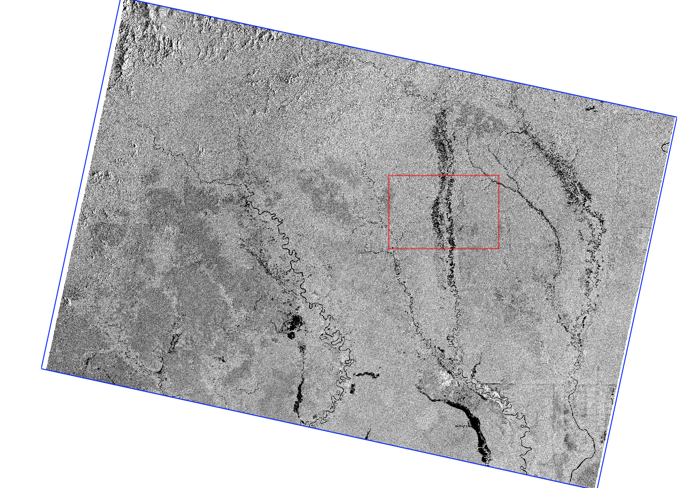

DESCRIPTION
i.sentinel_1.mosaic is a GRASS GIS addon to download and mosaic Sentinel-1
GRD Data based on the extent of the current computational region. It makes use of both
ESA's Scientific Data Hub (to download footprints) as well as the Alaska Satellite Facility
API (for Sentinel-1 data download). Login information for both platforms has to be provided.
This workaround is necessary as the longterm archive from ESA's Data Hub allows only direct
download of max. 1 year old data.
The algorithm aims at using as few individual scenes as possible to reduce processing time.
The footprint information from ESA's Scientific data hub is used to determine the combination of scenes that leads to
full coverage while using the least number of scenes. The import is aborted if full
coverage cannot be achieved with the given timerange.
NOTES
If the time interval indicated by start and end is chosen too short, the
computational region might not be fully covered. However, if the time interval is chosen too long,
the addon requires more time to find the optimal combination of scenes. Due to
the short revisit time of Sentinel-1, a time interval of 1-2 weeks to maximum 1 month should
be sufficient to create a full coverage. It is advised first to try a short period of time
and slowly increase the time interval if the data situation is not sufficient.
The available footprint data is usually larger than the actual scene coverage, as
Sentinel-1 GRD data contains border noise which is removed during preprocessing.

Figure: Sentinel-1 scene and corresponding footprint (blue)
This is accounted for in the addon by shrinking the footprints by 3km on each
side in range direction before checking coverage of the current computational
region.
EXAMPLE
Download, preprocess, and import a Sentinel-1 Mosaic from the beginning
of June 2017 based on the current computational region
i.sentinel_1.mosaic settings=/path/to/esa_credentials asf_credentials=/path/to/asf_credentials start=2019-06-01 end=2019-06-15 output=S1_June_2019 outpath=/path/to/temporary/folder memory=6000 bandname=Sigma0_VV,Sigma0_VH
REQUIREMENTS
SEE ALSO
i.sentinel.download,
i.sentinel_1.download_asf,
i.sentinel_1.import,
r.patch
AUTHORS
Guido Riembauer, mundialis